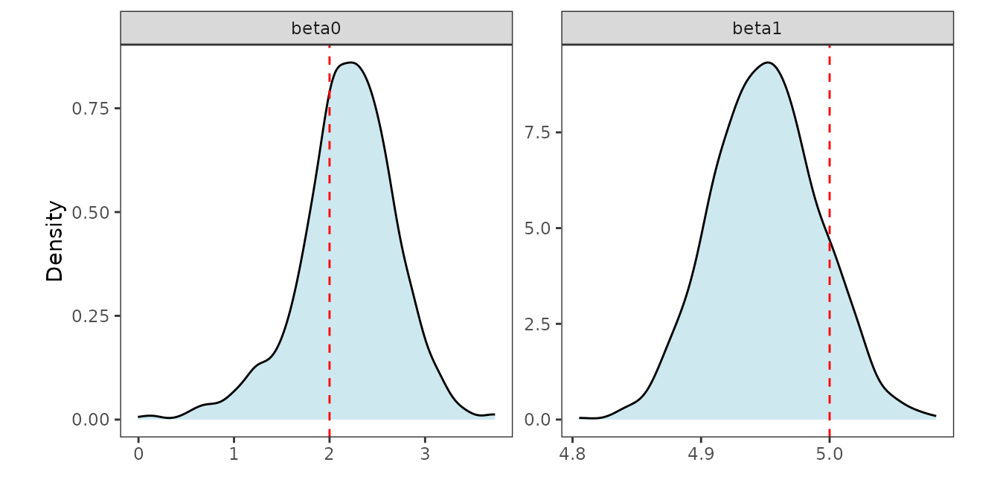

In this article, we discuss the following functions -
These functions can be used to fit Gaussian and non-Gaussian spatial point-referenced data.
Bayesian Gaussian spatial regression models
In this section, we thoroughly illustrate our method on synthetic Gaussian as well as non-Gaussian spatial data and provide code to analyze the output of our functions. We start by loading the package.
Some synthetic spatial data are lazy-loaded which includes synthetic
spatial Gaussian data simGaussian, Poisson data
simPoisson, binomial data simBinom and binary
data simBinary. One can use the function
sim_spData() to simulate spatial data. We will be applying
our functions on these datasets.
We first load the data simGaussian and set up the
priors. Supplying the priors is optional. See the documentation of
spLMexact() to learn more about the default priors.
Besides, setting the priors, we also fix the values of the spatial
process parameters and the noise-to-spatial variance ratio.
data("simGaussian")
dat <- simGaussian[1:200, ] # work with first 200 rows
muBeta <- c(0, 0)
VBeta <- cbind(c(10.0, 0.0), c(0.0, 10.0))
sigmaSqIGa <- 2
sigmaSqIGb <- 2
phi0 <- 2
nu0 <- 0.5
noise_sp_ratio <- 0.8
prior_list <- list(beta.norm = list(muBeta, VBeta),
sigma.sq.ig = c(sigmaSqIGa, sigmaSqIGb))
nSamples <- 2000We then pass these parameters into the main function.
set.seed(1729)
mod1 <- spLMexact(y ~ x1, data = dat,
coords = as.matrix(dat[, c("s1", "s2")]),
cor.fn = "matern",
priors = prior_list,
spParams = list(phi = phi0, nu = nu0),
noise_sp_ratio = noise_sp_ratio, n.samples = nSamples,
loopd = TRUE, loopd.method = "exact",
verbose = TRUE)## ----------------------------------------
## Model description
## ----------------------------------------
## Model fit with 200 observations.
##
## Number of covariates 2 (including intercept).
##
## Using the matern spatial correlation function.
##
## Priors:
## beta: Gaussian
## mu: 0.00000 0.00000
## cov:
## 10.00000 0.00000
## 0.00000 10.00000
##
## sigma.sq: Inverse-Gamma
## shape = 2.00, scale = 2.00.
##
## Spatial process parameters:
## phi = 2.00, and, nu = 0.50.
## Noise-to-spatial variance ratio = 0.80.
##
## Number of posterior samples = 2000.
##
## LOO-PD calculation method = exact.
## ----------------------------------------Next, we can summarize the posterior samples of the fixed effects as follows.
post_beta <- mod1$samples$beta
summary_beta <- t(apply(post_beta, 1, function(x) quantile(x, c(0.025, 0.5, 0.975))))
rownames(summary_beta) <- mod1$X.names
print(summary_beta)## 2.5% 50% 97.5%
## (Intercept) 1.388249 2.129140 2.932428
## x1 4.865843 4.954446 5.045627Leave-one-out predictive densities
If interested in finding leave-one-out predictive densities (LOO-PD)
for this model, set loopd to TRUE and provide
a loopd.method. Valid inputs for loopd.method
are "exact" and "PSIS" which finds exact
LOO-PD using closed form expressions and approximate LOO-PD using Pareto
smoothed importance sampling [@LOOCV_vehtari17].
mod2 <- spLMexact(y ~ x1, data = dat,
coords = as.matrix(dat[, c("s1", "s2")]),
cor.fn = "matern",
priors = prior_list,
spParams = list(phi = phi0, nu = nu0),
noise_sp_ratio = noise_sp_ratio, n.samples = nSamples,
loopd = TRUE, loopd.method = "PSIS",
verbose = FALSE)Out of curiosity, we compare the LOO-PD obtained by the two methods.
loopd_exact <- mod1$loopd
loopd_psis <- mod2$loopd
loopd_df <- data.frame(exact = loopd_exact, psis = loopd_psis)
library(ggplot2)
plot1 <- ggplot(data = loopd_df, aes(x = exact)) +
geom_point(aes(y = psis), size = 1, alpha = 0.5) +
geom_abline(slope = 1, intercept = 0, color = "red", alpha = 0.5) +
xlab("Exact") + ylab("PSIS") + theme_bw() +
theme(panel.background = element_blank(), aspect.ratio = 1)
plot1
Next, we move on to the Bayesian spatial stacking algorithm for Gaussian data. We supply the same prior list and provide some candidate values of spatial process parameters and noise-to-spatial variance ratio.
mod3 <- spLMstack(y ~ x1, data = dat,
coords = as.matrix(dat[, c("s1", "s2")]),
cor.fn = "matern",
priors = prior_list,
params.list = list(phi = c(1.5, 3, 5),
nu = c(0.5, 1, 1.5),
noise_sp_ratio = c(0.5, 1.5)),
n.samples = 1000, loopd.method = "exact",
parallel = FALSE, solver = "ECOS", verbose = TRUE)##
## STACKING WEIGHTS:
##
## | phi | nu | noise_sp_ratio | weight |
## +----------+-----+-----+----------------+--------+
## | Model 1 | 1.5| 0.5| 0.5| 0.000 |
## | Model 2 | 3.0| 0.5| 0.5| 0.000 |
## | Model 3 | 5.0| 0.5| 0.5| 0.000 |
## | Model 4 | 1.5| 1.0| 0.5| 0.226 |
## | Model 5 | 3.0| 1.0| 0.5| 0.000 |
## | Model 6 | 5.0| 1.0| 0.5| 0.774 |
## | Model 7 | 1.5| 1.5| 0.5| 0.000 |
## | Model 8 | 3.0| 1.5| 0.5| 0.000 |
## | Model 9 | 5.0| 1.5| 0.5| 0.000 |
## | Model 10 | 1.5| 0.5| 1.5| 0.000 |
## | Model 11 | 3.0| 0.5| 1.5| 0.000 |
## | Model 12 | 5.0| 0.5| 1.5| 0.000 |
## | Model 13 | 1.5| 1.0| 1.5| 0.000 |
## | Model 14 | 3.0| 1.0| 1.5| 0.000 |
## | Model 15 | 5.0| 1.0| 1.5| 0.000 |
## | Model 16 | 1.5| 1.5| 1.5| 0.000 |
## | Model 17 | 3.0| 1.5| 1.5| 0.000 |
## | Model 18 | 5.0| 1.5| 1.5| 0.000 |
## +----------+-----+-----+----------------+--------+The user can check the solver status and runtime by issuing the following.
print(mod3$solver.status)## [1] "optimal"
print(mod3$run.time)## user system elapsed
## 2.302 2.997 1.605To sample from the stacked posterior, the package provides a helper
function called stackedSampler(). Subsequent inference
proceeds from these samples obtained from the stacked posterior.
post_samps <- stackedSampler(mod3)We then collect the samples of the fixed effects and summarize them as follows.
post_beta <- post_samps$beta
summary_beta <- t(apply(post_beta, 1, function(x) quantile(x, c(0.025, 0.5, 0.975))))
rownames(summary_beta) <- mod3$X.names
print(summary_beta)## 2.5% 50% 97.5%
## (Intercept) 0.9303819 2.185930 2.949784
## x1 4.8678581 4.954272 5.030520Here, we compare the posterior samples of the spatial random effects with their corresponding true values.
post_z <- post_samps$z
post_z_summ <- t(apply(post_z, 1, function(x) quantile(x, c(0.025, 0.5, 0.975))))
z_combn <- data.frame(z = dat$z_true, zL = post_z_summ[, 1],
zM = post_z_summ[, 2], zU = post_z_summ[, 3])
plotz <- ggplot(data = z_combn, aes(x = z)) +
geom_point(aes(y = zM), size = 0.75, color = "darkblue", alpha = 0.5) +
geom_errorbar(aes(ymin = zL, ymax = zU), width = 0.05, alpha = 0.15,
color = "skyblue") +
geom_abline(slope = 1, intercept = 0, color = "red") +
xlab("True z") + ylab("Stacked posterior of z") + theme_bw() +
theme(panel.background = element_blank(), aspect.ratio = 1)
plotzThe package also provides functions to plot interpolated spatial
surfaces in order for visualization purposes. The function
surfaceplot() creates a single spatial surface plot, while
surfaceplot2() creates two side-by-side surface plots. We
are using the later to visually inspect the interpolated spatial
surfaces of the true spatial effects and their posterior medians.
postmedian_z <- apply(post_z, 1, median)
dat$z_hat <- postmedian_z
plot_z <- surfaceplot2(dat, coords_name = c("s1", "s2"),
var1_name = "z_true", var2_name = "z_hat")
library(ggpubr)
ggarrange(plotlist = plot_z, common.legend = TRUE, legend = "right")
Analysis of spatial non-Gaussian data
In this package, we offer functions for Bayesian analysis Poisson and binomial count data as well as binary data.
Spatial Poisson count data
We first load and plot the point-referenced Poisson count data.
data("simPoisson")
dat <- simPoisson[1:200, ] # work with first 200 observations
ggplot(dat, aes(x = s1, y = s2)) +
geom_point(aes(color = y), alpha = 0.75) +
scale_color_distiller(palette = "RdYlGn", direction = -1,
label = function(x) sprintf("%.0f", x)) +
guides(alpha = 'none') + theme_bw() +
theme(axis.ticks = element_line(linewidth = 0.25),
panel.background = element_blank(), panel.grid = element_blank(),
legend.title = element_text(size = 10, hjust = 0.25),
legend.box.just = "center", aspect.ratio = 1)
Next, we demonstrate the function spGLMexact() which
delivers posterior samples of the fixed effects and the spatial random
effects. The option family must be specified correctly
while using this function. For instance, in this example
family = "poisson". We provide fixed values of the spatial
process parameters and the boundary adjustment parameter, given by the
argument boundary, which if not supplied, defaults to 0.5.
For details on the priors and its default value, see function
documentation.
mod1 <- spGLMexact(y ~ x1, data = dat, family = "poisson",
coords = as.matrix(dat[, c("s1", "s2")]), cor.fn = "matern",
spParams = list(phi = phi0, nu = nu0),
boundary = 0.5,
n.samples = 1000, verbose = TRUE)## ----------------------------------------
## Model description
## ----------------------------------------
## Model fit with 200 observations.
##
## Family = poisson.
##
## Number of covariates 2 (including intercept).
##
## Using the matern spatial correlation function.
##
## Priors:
## beta: Gaussian
## mu: 0.00000 0.00000
## cov:
## 100.00000 0.00000
## 0.00000 100.00000
##
## sigmaSq.beta ~ IG(nu.beta/2, nu.beta/2)
## sigmaSq.z ~ IG(nu.z/2, nu.z/2)
## nu.beta = 2.10, nu.z = 2.10.
## sigmaSq.xi = 0.10.
## Boundary adjustment parameter = 0.50.
##
## Spatial process parameters:
## phi = 2.00, and, nu = 0.50.
##
## Number of posterior samples = 1000.
## ----------------------------------------We next collect the samples of the fixed effects and summarize them.
The true value of the fixed effects with which the data was simulated is
(for more details, see the documentation of the data
simPoisson).
post_beta <- mod1$samples$beta
summary_beta <- t(apply(post_beta, 1, function(x) quantile(x, c(0.025, 0.5, 0.975))))
rownames(summary_beta) <- mod1$X.names
print(summary_beta)## 2.5% 50% 97.5%
## (Intercept) -0.1302807 1.9026041 4.3045317
## x1 -0.6664152 -0.5545303 -0.4543145Next, we move on to the function spGLMstack() that will
implement our proposed stacking algorithm. The argument
loopd.controls is used to provide details on what algorithm
to be used to find LOO-PD. Valid options for the tag method
is "exact" and "CV". We use
-fold
cross-validation by assigning method = "CV"and
CV.K = 10. The tag nMC decides the number of
Monte Carlo samples to be used to find the LOO-PD.
mod2 <- spGLMstack(y ~ x1, data = dat, family = "poisson",
coords = as.matrix(dat[, c("s1", "s2")]), cor.fn = "matern",
params.list = list(phi = c(3, 7, 10), nu = c(0.5, 1.5),
boundary = c(0.5, 0.6)),
n.samples = 1000,
loopd.controls = list(method = "CV", CV.K = 10, nMC = 1000),
parallel = TRUE, solver = "ECOS", verbose = TRUE)##
## STACKING WEIGHTS:
##
## | phi | nu | boundary | weight |
## +----------+-----+-----+----------+--------+
## | Model 1 | 3| 0.5| 0.5| 0.000 |
## | Model 2 | 7| 0.5| 0.5| 0.000 |
## | Model 3 | 10| 0.5| 0.5| 0.000 |
## | Model 4 | 3| 1.5| 0.5| 0.000 |
## | Model 5 | 7| 1.5| 0.5| 0.000 |
## | Model 6 | 10| 1.5| 0.5| 0.000 |
## | Model 7 | 3| 0.5| 0.6| 0.000 |
## | Model 8 | 7| 0.5| 0.6| 0.000 |
## | Model 9 | 10| 0.5| 0.6| 0.000 |
## | Model 10 | 3| 1.5| 0.6| 0.175 |
## | Model 11 | 7| 1.5| 0.6| 0.825 |
## | Model 12 | 10| 1.5| 0.6| 0.000 |
## +----------+-----+-----+----------+--------+We can extract information on solver status and runtime by the following.
print(mod2$solver.status)## [1] "optimal"
print(mod2$run.time)## user system elapsed
## 23.891 35.051 14.912We first obtain final posterior samples by sampling from the stacked sampler.
post_samps <- stackedSampler(mod2)Subsequently, we summarize the posterior samples of the fixed effects.
post_beta <- post_samps$beta
summary_beta <- t(apply(post_beta, 1, function(x) quantile(x, c(0.025, 0.5, 0.975))))
rownames(summary_beta) <- mod3$X.names
print(summary_beta)## 2.5% 50% 97.5%
## (Intercept) -0.8032363 2.0460414 3.8253354
## x1 -0.6275769 -0.5471968 -0.4529202Finally, we analyze the posterior samples of the spatial random effects.
post_z <- post_samps$z
post_z_summ <- t(apply(post_z, 1, function(x) quantile(x, c(0.025, 0.5, 0.975))))
z_combn <- data.frame(z = dat$z_true, zL = post_z_summ[, 1],
zM = post_z_summ[, 2], zU = post_z_summ[, 3])
plotz <- ggplot(data = z_combn, aes(x = z)) +
geom_point(aes(y = zM), size = 0.75, color = "darkblue", alpha = 0.5) +
geom_errorbar(aes(ymin = zL, ymax = zU), width = 0.05, alpha = 0.15,
color = "skyblue") +
geom_abline(slope = 1, intercept = 0, color = "red") +
xlab("True z") + ylab("Stacked posterior of z") + theme_bw() +
theme(panel.background = element_blank(), aspect.ratio = 1)
plotzWe can also compare the interpolated spatial surfaces of the true spatial effects with that of their posterior median.
postmedian_z <- apply(post_z, 1, median)
dat$z_hat <- postmedian_z
plot_z <- surfaceplot2(dat, coords_name = c("s1", "s2"),
var1_name = "z_true", var2_name = "z_hat")
library(ggpubr)
ggarrange(plotlist = plot_z, common.legend = TRUE, legend = "right")
Spatial binomial count data
Here, we present only the spGLMexact() function for
brevity. The only argument that will change from that of in the case of
spatial Poisson data is the structure of formula that
defines the model.
data("simBinom")
dat <- simBinom[1:200, ] # work with first 200 rows
mod1 <- spGLMexact(cbind(y, n_trials) ~ x1, data = dat, family = "binomial",
coords = as.matrix(dat[, c("s1", "s2")]), cor.fn = "matern",
spParams = list(phi = 3, nu = 0.5),
boundary = 0.5, n.samples = 1000, verbose = FALSE)Similarly, we collect the posterior samples of the fixed effects and summarize them. The true value of the fixed effects with which the data was simulated is .
post_beta <- mod1$samples$beta
summary_beta <- t(apply(post_beta, 1, function(x) quantile(x, c(0.025, 0.5, 0.975))))
rownames(summary_beta) <- mod1$X.names
print(summary_beta)## 2.5% 50% 97.5%
## (Intercept) -1.2039026 0.7229478 2.5872269
## x1 -0.5815266 -0.4016808 -0.2365151Spatial binary data
Finally, we present only the spGLMexact() function for
spatial binary data to avoid repetition. In this case, unlike the
binomial model, almost nothing changes from that of in the case of
spatial Poisson data.
data("simBinary")
dat <- simBinary[1:200, ]
mod1 <- spGLMexact(y ~ x1, data = dat, family = "binary",
coords = as.matrix(dat[, c("s1", "s2")]), cor.fn = "matern",
spParams = list(phi = 4, nu = 0.4),
boundary = 0.5, n.samples = 1000, verbose = FALSE)Similarly, we collect the posterior samples of the fixed effects and summarize them. The true value of the fixed effects with which the data was simulated is .
post_beta <- mod1$samples$beta
summary_beta <- t(apply(post_beta, 1, function(x) quantile(x, c(0.025, 0.5, 0.975))))
rownames(summary_beta) <- mod1$X.names
print(summary_beta)## 2.5% 50% 97.5%
## (Intercept) -1.1291296 0.3061828 1.70795510
## x1 -0.6507851 -0.3088350 0.04471555